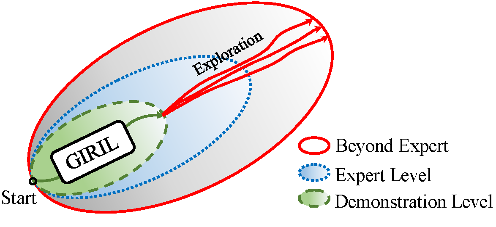
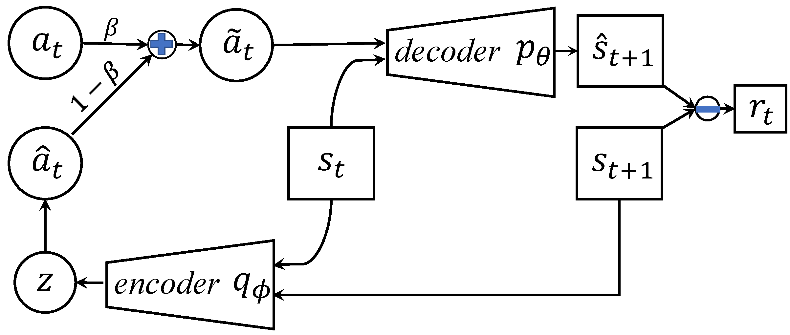

Imitation learning in a high-dimensional environment is challenging. Most inverse reinforcement learning (IRL) methods fail to outperform the demonstrator in such a high-dimensional environment, e.g., Atari domain. To address this challenge, we propose a novel reward learning module to generate intrinsic reward signals via a generative model. Our generative method can perform better forward state transition and backward action encoding, which improves the module’s dynamics modeling ability in the environment. Thus, our module provides the imitation agent both the intrinsic intention of the demonstrator and a better exploration ability, which is critical for the agent to outperform the demonstrator. Empirical results show that our method outperforms state-of-the-art IRL methods on multiple Atari games, even with one-life demonstration. Remarkably, our method achieves performance that is up to 5 times the performance of the demonstration.
We propose Generative Intrinsic Reward driven Imitation Learning (GIRIL), which seeks a family of intrinsic reward functions that enables the agent to do sampling-based self-supervised exploration in the environment.

GIRIL operates by reward inference and policy optimization, and includes a novel generative intrinsic reward learning (GIRL) module based on a generative model. We chose variational autoencoder (VAE) (Kingma & Welling, 2013) as our model base. It operates by modeling the forward dynamics as a conditional decoder and the backward dynamics as a conditional encoder. The decoder learns to generate diverse future states from the action conditioned on the current state. Accordingly, the encoder learns to encode the future state back to the action latent variable (conditioned on the current state). In this way, our generative model performs better forward state transition and backward action encoding, which improves its dynamics modeling ability in the environment. Our model generates a family of intrinsic rewards, which enables the agent to do sampling-based selfsupervised exploration in the environment, which is the key to better-than-expert performance.

Demo Videos
Demo videos of the environments investigated in the paper. We show that agents are able to outperform the expert performance by imitation learning from only a one-life demonstration.